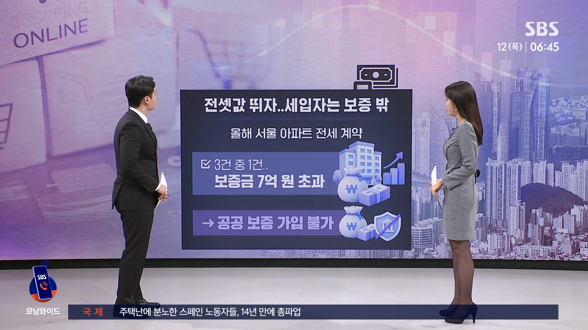
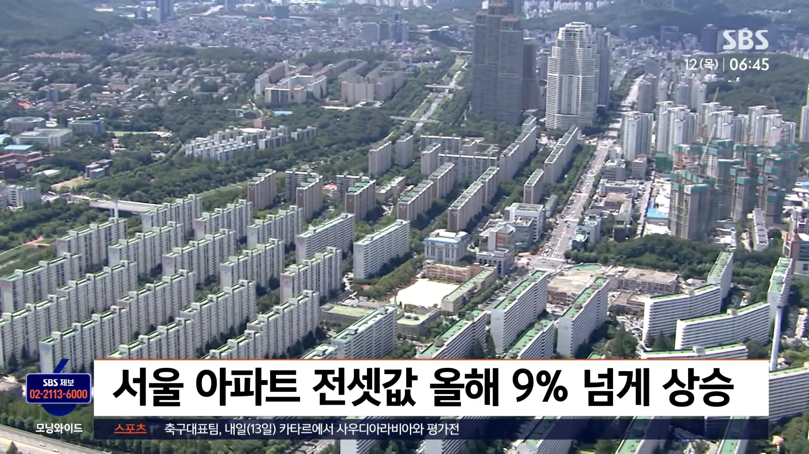
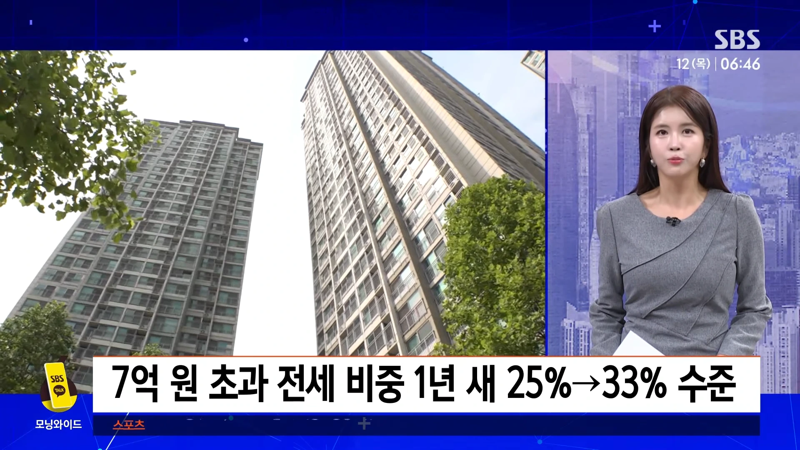
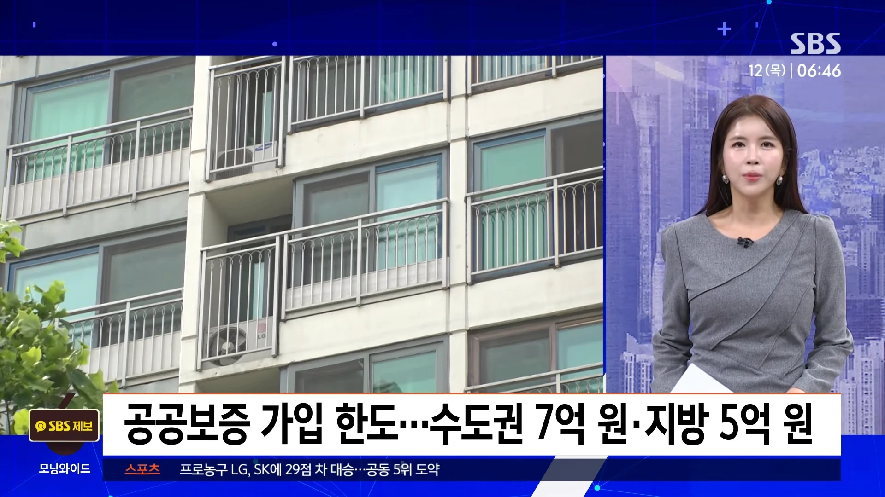
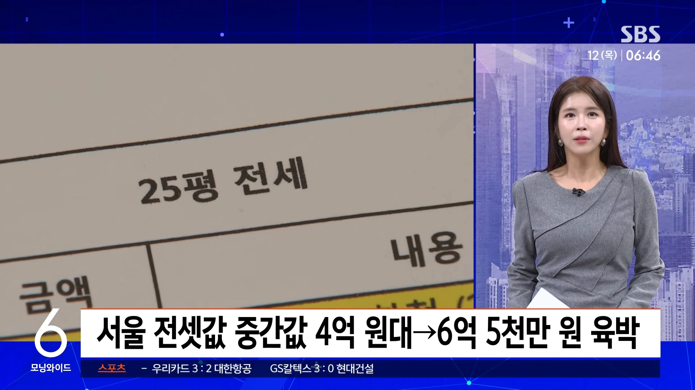
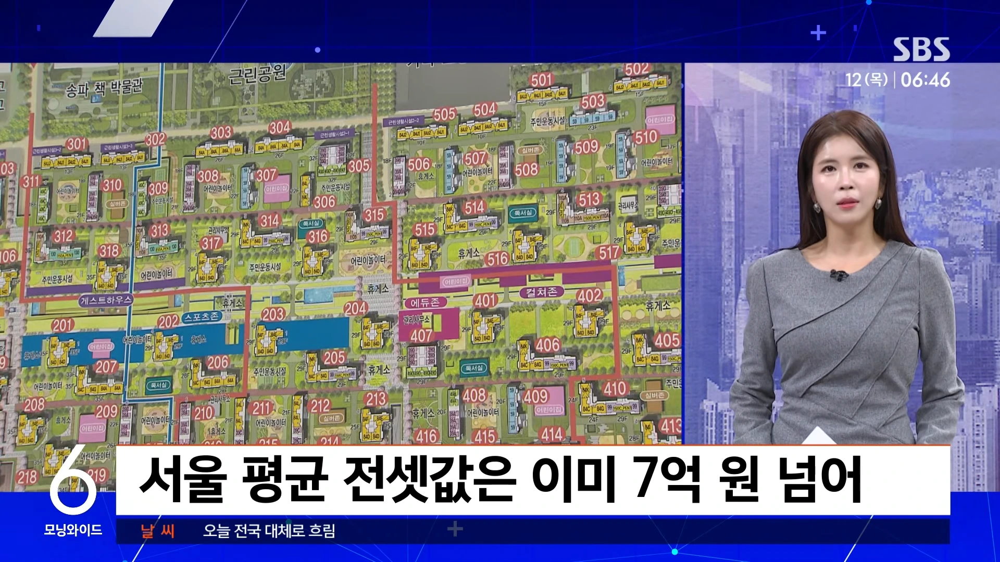
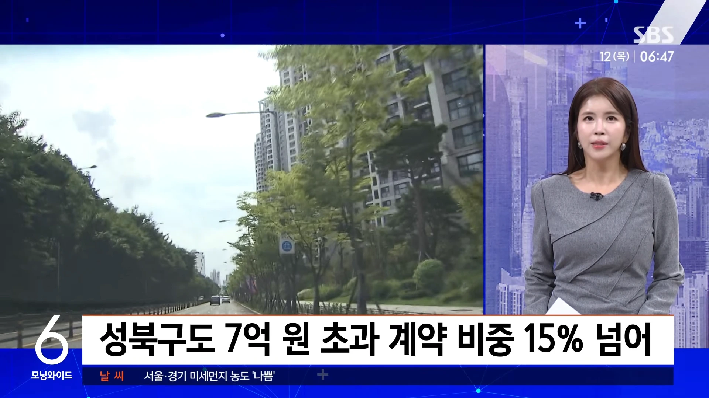
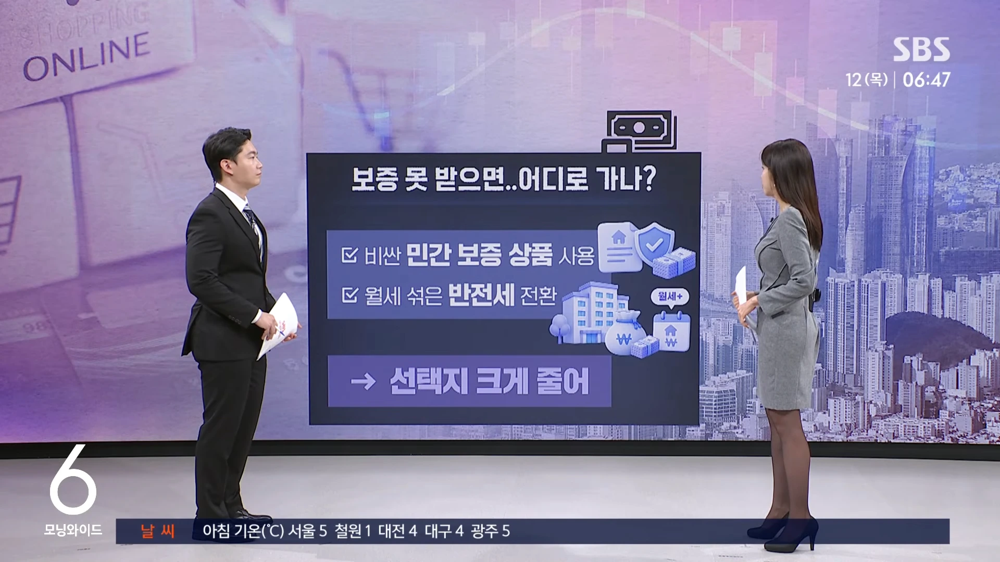
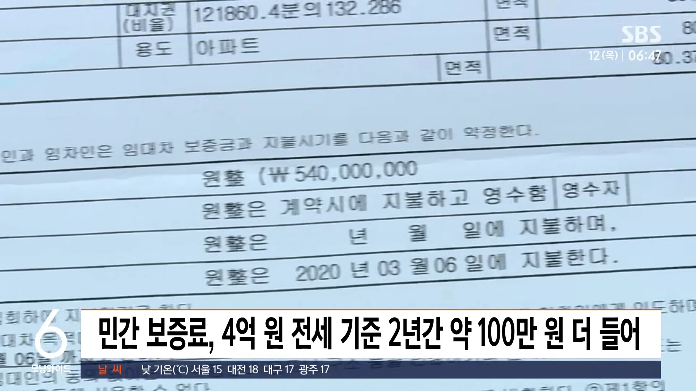
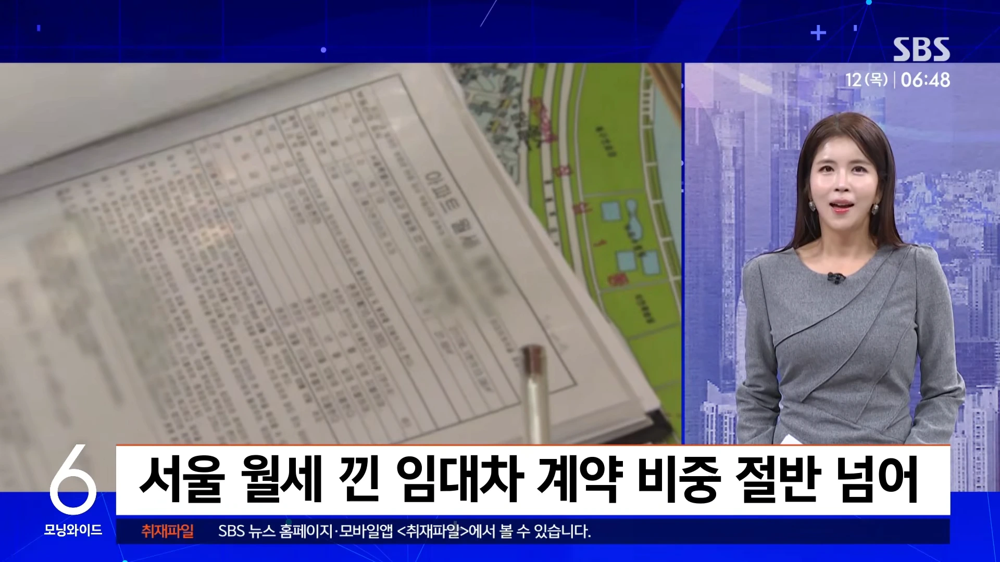
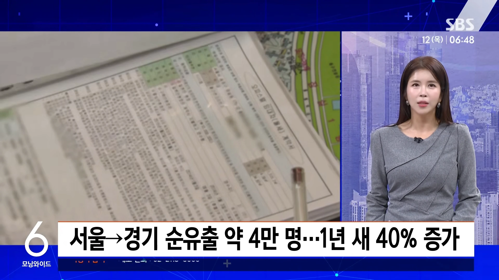
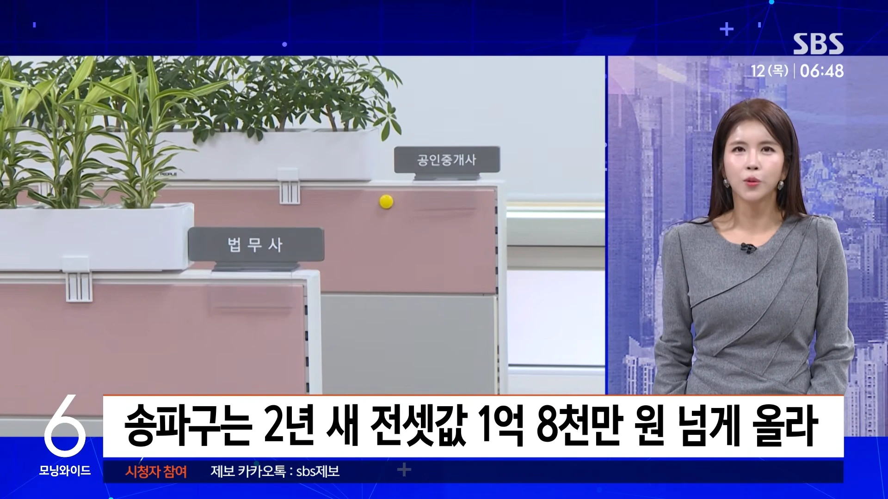
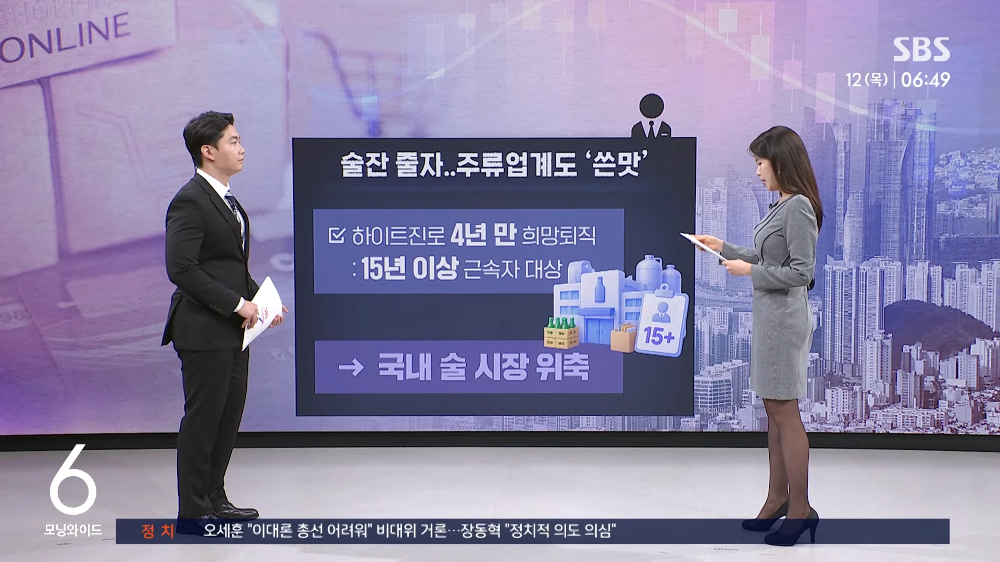
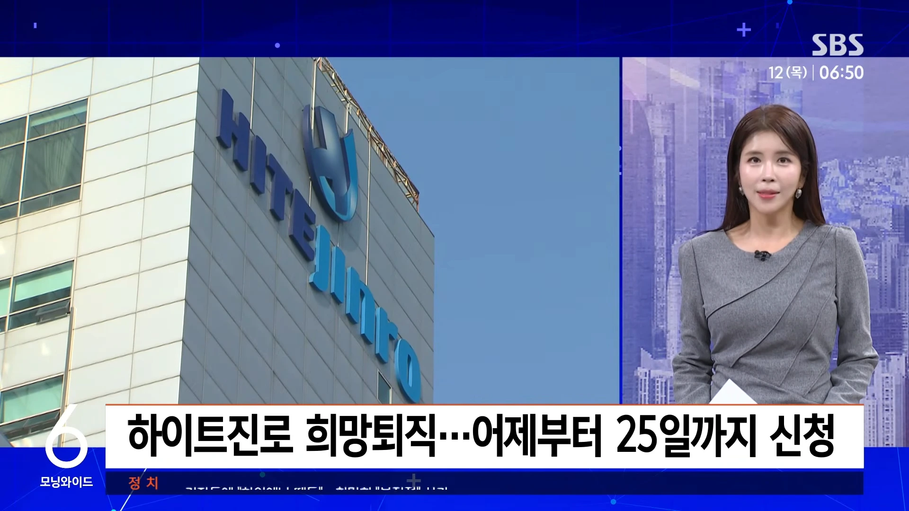
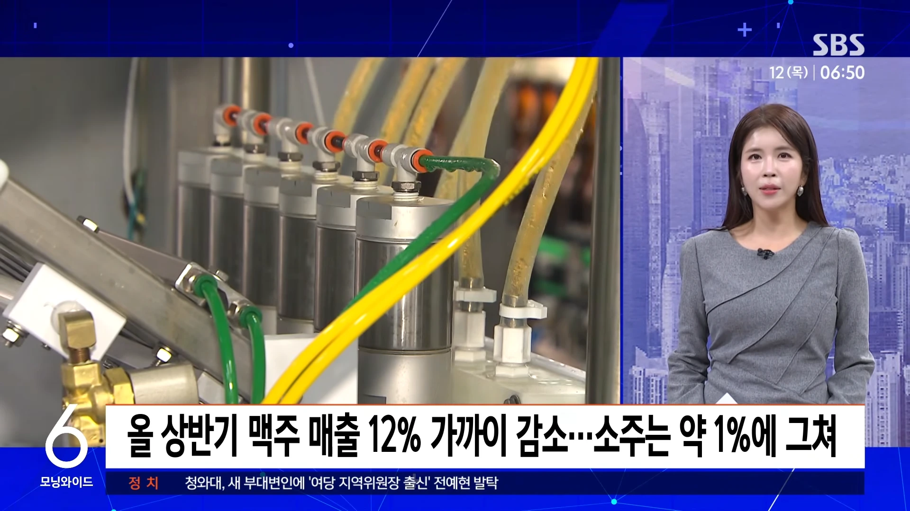
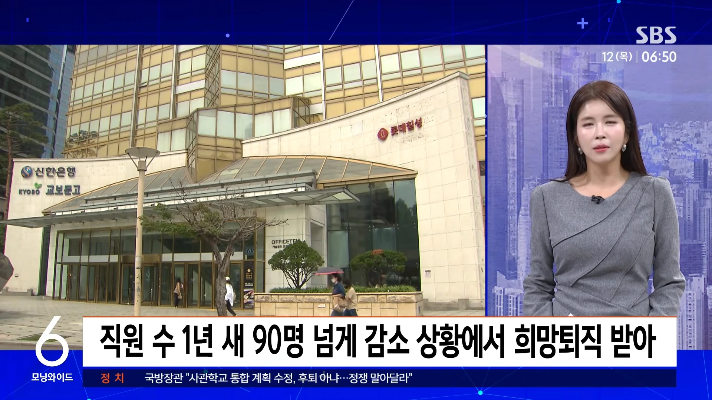
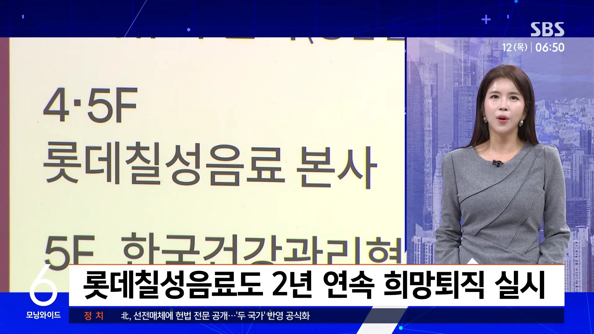
목요일 친절한 경제 한지연 기자 나와 있습니다. 한 기자, 요새 전세가 비싸져서 전세보증 상품 가입이 안 되는 집들이 많다고요.
올해 서울 아파트 전세 계약 3건 중 1건이 보증금 7억 원을 넘어섰는데요.
이렇게 되면서 나라에서 해주는 보증에 가입이 되지 않고 있습니다.
전셋값 오르는 거 요즘 다들 체감하시죠.
서울은 올 들어서만 9% 넘게 집값보다 더 올랐는데요.
그러다 보니 보증금이 7억 원 넘는 전세가 작년만 해도 넷 중 하나꼴이었는데, 1년 새 부쩍 늘었습니다.
문제는 이 7억 원이라는 선입니다.
수도권은 보증금이 7억 원, 지방은 5억 원을 넘으면 주택도시보증공사나 주택금융공사 같은 공공기관 보증을 못 받거든요.
전세대출 보증은 쉽게 말해 나라 기관이 보증인이 돼줘서 은행에서 싼 이자로 전세대출을 받게 해주는 거고요.
반환보증은 집주인이 보증금을 안 내줘도 나라 기관이 먼저 물어주는 일종의 보험이죠.
그런데 반환보증의 이 7억 원 기준, 2018년에 5억 원에서 올린 뒤로 그대로입니다.
그때 서울 아파트 전셋값을 쭉 줄 세웠을 때 가운데 값이 4억 원대였는데, 지난달에 6억 5천만 원에 육박하고, 평균은 이미 7억 원을 넘었습니다.
8년 전 치수로 맞춘 옷을 지금도 입으라는 거죠.
강남만의 얘기도 아닙니다.
성동구는 전세 계약 절반 넘게, 과천은 10건 중 9건이 7억 원을 넘었고요.
서울 성북구도 지난 9월 7억 원 넘는 계약 비중이 15%를 넘었습니다.
성북구 같은 경우는 몇 년째 2~5%에 머물던 곳이었습니다.
이른바 보증 사각지대가 수도권 곳곳으로 번지는 겁니다.
이런 집들은 특히 소유 권리관계를 정확하게 확인해 봐야겠습니다.
그 부분도 중요하고요.
또 비싼 민간보증 상품을 쓰거나 월세를 섞는 반전세로 돌리거나 선택지 자체가 크게 줍니다.
민간보증은 얼마나 더 비쌀까요.
같은 4억 원짜리 전셋집으로 따져봐도 민간상품을 쓰면 2년의 보증료가 100만 원쯤 더 든다는 추산이 있습니다.
그런데 반전세로 돌리면 매달 월세가 나가죠.
요즘 서울은 월세 낀 계약이 절반을 넘었다는 얘기 들어보셨을 겁니다.
아예 서울을 떠나 경기로 가는 분들도 많죠.
올해 서울에서 경기로 순수하게 빠져나간 인구가 4만 명 가까이로, 1년 새 40% 늘었습니다.
그렇다고 보증 없이 버티자니 역전세나 전세사기 때 기댈 데가 없습니다.
재계약 때도 문제인데요.
서울 아파트 전셋값이 2년 전보다 평균 8천만 원 넘게, 송파구는 1억 8천만 원 넘게 올라서, 재계약하면서 보증금을 올려주다 7억 원 선을 넘으면 그동안 되던 보증도 못 받게 되는 겁니다.
전셋값에 금리 부담까지 겹쳐 세입자들 한숨이 깊은데, 이 추세면 내년에는 7억 원 넘는 전세가 더 늘 거라는 전망까지 나옵니다.
그럼 7억 원 기준을 올리면 되지 않나 싶으실 텐데, 하지만 상한선을 계속 올리기는 쉽지 않다는 게 전문가 얘기인데요.
한도를 올려주면 그만큼 보증금도 올려 받을 수 있어서, 오히려 전셋값을 밀어 올릴 수 있다는 우려 때문일 겁니다.
그래서 적어도 재계약하다 기준을 넘게 된 세입자는 원래 보증 자격을 유지해 주자는 제안이 나옵니다.
요새 수출이든 성장률이든 좋다는 얘기는 많이 나오지만, 다른 세상 얘기인 산업들도 많죠.
그게 바로 이 하이트진로 얘기인데요, 주류업계 얘기인데요.
하이트진로가 15년 이상 근속자 대상으로 4년 만에 희망퇴직을 받는데, 국내에 술 시장이 쪼그라든 게 원인이 됐습니다.
술 덜 마시는 분위기 다들 느끼시죠.
20대는 절반 넘게 술을 아예 안 마시거나 마셔도 한 달에 한 번 이하라고 하고, 지난해 국내 술 출고량은 27년 만에 처음 300만 ㎘ 아래로 떨어졌습니다.
이런 가운데 나온 희망퇴직입니다.
어제(11일)부터 이달 25일까지 신청을 받고 위로금은 퇴직금과 별도로 근속 연수에 따라 월급 20개월 치에서 36개월 치로, 4년 전보다 많게는 14개월 치가 줄었습니다.
실적을 들여다보면 특히 맥주가 고전하고 있습니다.
올 상반기 이 회사 맥주 매출이 1년 전보다 12% 가까이 빠졌는데, 소주는 1% 정도 덜 팔리는 데 그쳤거든요.
지난해 맥주로 남긴 영업이익은 1년 새 4분의 1 수준이 됐고, 맥주 공장 가동률도 60%가 안 됐습니다.
회사 전체로도 올 상반기 매출과 영업이익이 함께 뒷걸음질 쳤고, 직원 수는 1년 새 90명 넘게 줄었는데, 여기에 희망퇴직까지 받은 겁니다.
술 회사 희망퇴직, 하이트진로만의 얘기는 아닙니다.
음료와 술을 함께 만드는 롯데칠성음료도 지난해에 이어 올해 또 10년 이상 다닌 직원을 대상으로 희망퇴직을 받기로 했습니다.
댓글
수집 당시 댓글 96개
DOOM · 11.12 21:25:30
ㅇㅇ · 11.12 21:26:51
· ㅇㅇ · 11.12 21:27:10
· ㅇㅇ · 11.12 21:33:07
· ㅇㅇ · 11.12 21:50:38
· ㅇㅇ · 11.12 22:02:12
· 프븨 · 11.12 22:12:19
· ㅇㅇ · 11.12 22:29:27
· ㅇㅇ · 11.13 00:15:30
· ㅇㅇ · 11.13 07:08:19
· ㅇㅇ · 11.13 13:54:51
ㅇㅇ · 11.12 21:28:29
ㅇㅇㅇㅇ · 11.12 21:28:35
ㅇㅇ · 11.12 21:28:53
· ㅇㅇ · 11.12 21:29:08
· ㅇㅇ · 11.12 21:29:25
kzine · 11.12 21:29:13
ㅇㅇ · 11.12 21:29:35
· ㅇㅇ · 11.13 07:08:08
ㅇㅇ · 11.12 21:29:56
흠... · 11.12 21:32:08
· ㅇㅇ · 11.13 07:08:40
ㅇㅇ · 11.12 21:33:10
ㅇㅇ · 11.12 21:33:42
ㅇㅇ · 11.12 21:35:14
· ㅇㅇ · 11.12 21:44:21
· ㅇㅇ · 11.12 21:47:17
· ㅇㅇ · 11.12 21:49:47
· ㅇㅇ · 11.12 21:59:59
· ㅇㅇ · 11.12 22:23:32
아바나잘감자 · 11.12 21:36:12
· 아바나잘감자 · 11.12 21:37:19
· ㅇㅇ · 11.12 21:41:40
ㅇㅇ · 11.12 21:36:59
재~명
ㅇㅇ · 11.12 21:37:03
ㅇㅇ · 11.12 21:38:58
· ㅇㅇ · 11.13 07:07:57
ㅇㅇ · 11.12 21:39:20
ㅇㅇ · 11.12 21:40:04
ㅇㅇ · 11.12 21:40:05
ㅇㅇ · 11.12 21:47:47
민.좆.당
ㅇㅇ · 11.12 21:49:30
ㅇㅇ · 11.12 21:50:09
ㅇㅇ · 11.12 21:51:00
ㅇㅇ · 11.12 21:51:42
Gabbia · 11.12 21:53:58
· ㅇㅇ · 11.13 07:08:52
일베충 · 11.12 21:55:14
· 일베충 · 11.12 21:55:18
· 일베충 · 11.12 21:55:23
ㅇㅇ · 11.12 21:58:09
ㅇㅇ · 11.12 21:58:54
ㅇㅇ · 11.12 21:59:28
· ㅇㅇ · 11.13 07:08:31
ㅇㅇ · 11.12 22:01:15
· ㅇㅇ · 11.12 22:14:31
ㅇㅇ · 11.12 22:03:00
증거를친일천주새끼들 · 11.12 22:03:38
ㅇㅇ · 11.12 22:09:44
ㅇㅇ · 11.12 22:26:04
ㅇㅇ · 11.12 22:27:01
ㅇㅇ · 11.12 22:36:32
ㅇㅇ · 11.12 23:02:03
대재명
ㅇㅇ · 11.12 23:02:25
녁슨 마비누기 사랑단 · 11.12 23:04:22
원또 · 11.12 23:25:37
ㅇㅇ · 11.12 23:31:46
· ㅇㅇ · 11.12 23:40:06
· ㅇㅇ · 11.13 00:53:47
· ㅇㅇ · 11.13 04:31:24
ㅇㅇ · 11.12 23:39:28
ㅇㅇ · 11.12 23:49:39
뉴천지 · 11.12 23:50:39
ㅇㅇ · 11.12 23:55:04
ㅇㅇ · 11.13 00:05:29
ㅇㅇ · 11.13 00:09:41
· ㅇㅇ · 11.13 00:54:28
ㅇㅇ · 11.13 00:16:07
· 가츠 · 11.13 12:26:41
ㅇㅇ · 11.13 00:17:19
이재명
뽑았으면
감당해
ㅇㅇ · 11.13 00:18:29
환란 전 교회 휴거 · 11.13 00:30:16
ㅇㅇ · 11.13 01:00:33
ㅇㅇ · 11.13 04:30:41
ㅇㅇ · 11.13 04:55:28
· ㅇㅇ · 11.13 04:55:41
태영건설
SBS
부동산뉴스
걸러라
· ㅇㅇ · 11.13 06:28:37
ㅇㅇ · 11.13 04:59:47
ㅇㅇ · 11.13 04:59:52
ㅇㅇ · 11.13 07:07:16
· ㅇㅇ · 11.13 07:50:54
ㅇㅇ · 11.13 07:14:52
ㅇㅇ · 11.13 08:40:31
ㅇㅇ · 11.13 10:17:09
ㅇㅇ · 11.13 11:38:36
ㅇㅇ · 11.13 11:55:39